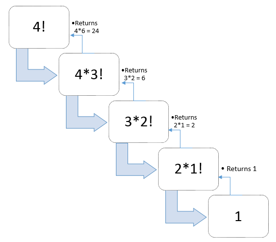

Rekursiya: O'z-o'ziga murojaat qilish
Rekursiyaning ta'rifi
Rekursiya so'zining ma'nosi: Rekursiya so'zining ma'nosi: "Biror muammoni hal qilish uchun, masalan, o'z-o'zini chaqirish yoki avvalgi natijalarni qayta ishlash orqali takroriy jarayonni amalga oshirish" yoki "Muammoni hal qilish jarayonida funksiya yoki algoritmning o'zini o'zi chaqirishi, odatda ma'lum bir asosiy shart yoki holatga erishguncha davom etadi".
Illustration
Funksiya o'zini to'g'ridan-to'g'ri yoki bilvosita chaqiradigan jarayon rekursiya deb ataladi va mos keluvchi funksiya rekursiv funksiya deb nomlanadi.
- Rekursiv algoritm yechimga yaqinlashish uchun bir qadam bajaradi, keyin yana o'zini chaqirib davom etadi. Algoritm yechimga erishganimizda to'xtaydi.
- Chaqirilgan funksiya yana o'zini chaqirishi mumkinligi sababli, bu jarayon cheksiz davom etishi mumkin. Shuning uchun rekursiyani to'xtatish uchun asosiy holatni taqdim etish muhimdir.
Rekursiyaning zarurati
- Rekursiya mantiqni rivojlantirishga yordam beradi. Rekursiv fikrlash murakkab muammolarni kichikroq muammolarga ajratish orqali yechishda yordam beradi.
- Rekursiv yechimlar Dynamic Programming va Divide and Conquer algoritmlarining asosi bo'lib xizmat qiladi.
- Ba'zi muammolarni rekursiya yordamida juda oson yechish mumkin, masalan, Hanoi minoralari (TOH), Daraxtlarni Inorder/Preorder/Postorder bo'yicha aylanib chiqish, Grafning DFS (Depth First Search) kabi.
Qadamlar
1-qadam – Asosiy holatni aniqlang: Eng oddiy (yoki asosiy) holatni aniqlang, bu holatda yechim ma'lum yoki oddiy bo'ladi. Bu rekursiyani to'xtatish shartidir va funksiyaning cheksiz o'zini chaqirishining oldini oladi.
2-qadam – Rekursiv holatni aniqlang: Muammoni kichikroq submuammolar shaklida aniqlang. Muammoni o'zining kichikroq versiyalariga bo'ling va har bir submuammoni hal qilish uchun funksiyani rekursiv chaqiring.
3-qadam – Rekursiya tugashini ta'minlang: Rekursiv funksiya oxir-oqibat asosiy holatga yetishini va cheksiz aylanishga tushmasligini ta'minlang.
4-qadam – Yechimlarni birlashtiring: Asl muammoni hal qilish uchun submuammolarning yechimlarini birlashtiring.
Misol 1: Natural sonlar yig'indisi
Natural sonlar yig'indisini topish muammosini ko'rib chiqamiz. Buni hal qilishning bir nechta usullari mavjud, ammo eng oddiy yondashuv bu sonlarni 0 dan n gacha qo'shishdir. Shunday qilib, funksiya quyidagicha ko'rinishda bo'ladi:
yondashuv(1) – Birma-bir qo'shish
f(n) = 0 + 1 + 2 + 3 + …… + n
Lekin buni ifodalashning yana bir matematik yondashuvi mavjud:
yondashuv(2) – Rekursiv qo'shish
f(n) = 0 n=0
f(n) = n + f(n-1) n>=1
// Recursive function to find the sum of
// numbers from 0 to n
function findSum(n) {
// Base case
if (n === 0)
return 0;
// Recursive case
return n + findSum(n - 1);
}
let n = 5;
console.log(findSum(n));Natija
15
Rekursiyada asosiy shart (base condition) nima?
Rekursiv dastur asosiy shartda to'xtaydi. Rekursiyada bir yoki undan ko'p asosiy shartlar bo'lishi mumkin. Yuqoridagi dasturda asosiy shart n = 1 bo'lgan holatdir.
Qanday qilib rekursiya yordamida muammo hal qilinadi?
Asosiy g'oya muammoni bir yoki bir nechta kichik muammolar shaklida ifodalashdir va rekursiyani to'xtatadigan bir yoki bir nechta asosiy shartlarni qo'shishdir.
Misol 2: Sonning Faktoriali
Faktorial son n (bu yerda n ≥ 0) uchun 1 dan n gacha bo'lgan sonlarning ko'paytmasi sifatida aniqlanadi. Rekursiv hisoblashda, agar (n-1) faktorialini bilsak, biz n faktorialini hisoblay olamiz. Faktorial uchun asosiy holat n = 0 bo'ladi. n = 0 bo'lganda 1 qaytaramiz.
function fact(n) {
// BASE CONDITION
if (n === 0)
return 1;
return n * fact(n - 1);
}
console.log("Factorial of 5 : " + fact(5));Natija
5 sonining faktoriali: 120
Yuqoridagi kodning izohi:

Rekursiyada Stack Overflow xatosi qachon yuzaga keladi?
Agar asosiy shart (base case) to'g'ri belgilangan yoki unga erishilgan bo'lmasa, stack overflow muammosi yuzaga kelishi mumkin. Bu tushunchani tushunish uchun bir misolni ko'rib chiqamiz.
function fact(n) {
// noto'g'ri asosiy shart (bu stack overflowga olib kelishi mumkin).
if (n === 100)
return 1;
else
return n * fact(n - 1);
}
Agar fact(10) chaqirilsa, u fact(9), fact(8), fact(7) kabi chaqiruvlarni davom ettiradi, lekin qiymat hech qachon 100 ga yetmaydi. Shunday qilib, asosiy shart bajarilmaydi. Agar stackdagi funksiyalar xotirani to'ldirib yuborsa, stack overflow xatosi yuzaga keladi.
To'g'ridan-to'g'ri va bilvosita rekursiya o'rtasidagi farq nima?
Agar biror funksiya o'zini o'zi chaqirsa, u to'g'ridan-to'g'ri rekursiv deyiladi. Agar funksiya boshqa funksiyani (masalan, fun_new) chaqirsa va fun_new yana o'sha dastlabki funksiyani chaqirsa, u bilvosita rekursiya deb ataladi. To'g'ridan-to'g'ri va bilvosita rekursiya o'rtasidagi farq 1-jadvalda ko'rsatilgan.
// To'g'ridan-to'g'ri rekursiya misoli
void directRecFun()
{
// Ba'zi kodlar...
directRecFun();
// Ba'zi kodlar...
}
// Bilvosita rekursiya misoli
void indirectRecFun1()
{
// Ba'zi kodlar...
indirectRecFun2();
// Ba'zi kodlar...
}
void indirectRecFun2()
{
// Ba'zi kodlar...
indirectRecFun1();
// Ba'zi kodlar...
}
Dumli (tail) va dumli bo'lmagan rekursiya o'rtasidagi farq nima?
Rekursiv funksiya dumli rekursiya deyiladi, agar rekursiv chaqiriq funksiya bajaradigan oxirgi narsa bo'lsa. Batafsil ma'lumot uchun dumli rekursiya maqolasiga murojaat qiling.
Rekursiyada turli funksiyalar chaqiruvlari uchun xotira qanday ajratiladi?
Rekursiya har bir chaqiriq uchun ichki funksiya chaqiruv stekida qo'shimcha xotira talab qiladi.
- Funksiya chaqirilganda, uning yozuvi stekka qo'shiladi va chaqiriq tugaguncha stekda qoladi.
- Ichki tizimlar LIFO (birinchi chiqadigan oxirgi kirgan) tuzilishiga amal qilgani uchun stekdan foydalanadi; oxirgi chaqirilgan funksiya birinchi tugaydi.
Main() funksiyasidan biror funksiya chaqirilganda, unga xotira stekda ajratiladi. Rekursiv funksiya o'zini o'zi chaqirganda, chaqirilgan funksiya uchun xotira chaqiruvchi funksiyaga ajratilgan xotiraning ustiga joylashadi va har bir chaqiriq uchun mahalliy o'zgaruvchilarning alohida nusxasi yaratiladi. Asosiy shartga (base case) erishilganda, funksiya qiymatni qaytaradi, xotira bo'shatiladi va jarayon davom etadi.
Keling, oddiy bir funksiya yordamida rekursiya qanday ishlashini tushunamiz.
// A JavaScript program to demonstrate working of recursion
function printFun(test) {
if (test < 1)
return;
else {
console.log(test);
printFun(test - 1); // statement 2
console.log(test);
return;
}
}
// Driver Code
let test = 3;
printFun(test);Natija
3 2 1 1 2 3
Qachonki printFun(3) asosiy dasturdan chaqirilsa, printFun(3) uchun xotira ajratiladi va mahalliy o'zgaruvchi "test" 3 ga teng qilib boshlang'ich qiymat oladi. 1 dan 4-gacha bo'lgan bayonotlar stack (steck xotira) ga qo'shiladi, quyidagi diagrammada ko'rsatilganidek. Avval "3" chop etiladi. 2-bayonotda printFun(2) chaqiriladi va xotira printFun(2) uchun ajratiladi, mahalliy o'zgaruvchi "test" 2 ga teng qilib boshlang'ich qiymat oladi va 1 dan 4-gacha bo'lgan bayonotlar stack ga qo'shiladi. Xuddi shunday, printFun(2) printFun(1) ni chaqiradi, va printFun(1) printFun(0) ni chaqiradi. printFun(0) agar shartiga o'tadi va printFun(1) ga qaytadi. Qolgan bayonotlar printFun(1) bajariladi va u printFun(2) ga qaytadi va hokazo. Natijada, 3 dan 1 gacha bo'lgan qiymatlar chop etiladi, keyin esa 1 dan 3 gacha bo'lgan qiymatlar qayta chop etiladi. Xotira stack (steck) quyidagi diagrammada ko'rsatilgan.

Rekursiya va Iteratsiya
| № | Rekursiya | Iteratsiya |
| 1) | Asosiy shart bajarilganda yakunlanadi. | Loop (takrorlash) sharti bajarilmaganda yakunlanadi. |
| 2) | Mantiq kichikroq muammolar asosida quriladi. | Mantiq biror narsa ustida iteratsiya qilish orqali quriladi. |
| 3) | Har bir rekursiv chaqiruv uchun stack (steck) xotirasida qo'shimcha joy kerak bo'ladi. | Har bir iteratsiya qo'shimcha xotira talab qilmaydi. |
| 4) | Kichikroq kod hajmi. | Katta kod hajmi. |
Misol 4: Fibonacci rekursiya bilan
n ≥ 0 bo'lganda Fibonacci qatorini topish uchun dastur va qayta yozish munosabatini yozing.
Matematik tenglama:
n agar n == 0, n == 1 bo'lsa;
fib(n) = fib(n-1) + fib(n-2) aks holda;
Qayta yozish munosabati:
T(n) = T(n-1) + T(n-2) + O(1)
// Function for fibonacci
function fib(n) {
// Stop condition
if (n === 0) return 0;
// Stop condition
if (n === 1 || n === 2) return 1;
// Recursion function
return fib(n - 1) + fib(n - 2);
}
// Driver Code
let n = 5;
console.log("Fibonacci series of 5 numbers is:");
// for loop to print the fibonacci series.
for (let i = 0; i < n; i++) {
console.log(fib(i) + " ");
}Natija
Fibonacci qatorining 5 ta soni: 0 1 1 2 3
Yuqoridagi kod uchun Rekursiya daraxti:

Misol: Rekursiyaning haqiqiy muammolarda qo'llanilishi
Rekursiya – bu kompyuter fanlari va dasturlashda keng qo'llaniladigan kuchli usul. Quyida rekursiyaning ba'zi keng tarqalgan qo'llanishlari keltirilgan:
- Daraxt va grafni o‘rganish: Rekursiya daraxtlar va graf kabi ma'lumotlar strukturalarini o'rganish va qidirish uchun tez-tez ishlatiladi. Rekursiv algoritmlar daraxt yoki grafning barcha tugunlarini yoki nuqtalarini tizimli tarzda o'rganish uchun ishlatilishi mumkin.
- Saralash algoritmlari: Rekursiv algoritmlar shuningdek, quicksort va merge sort kabi saralash algoritmlarida ham ishlatiladi. Ushbu algoritmlar ma'lumotlarni kichikroq kichik massivlar yoki ro‘yxatlarga bo‘lib, ularni saralab, so‘ngra birlashtiradi.
- Bo'lish va zabt etish algoritmlari: Ko‘p algoritmlar bo‘lish va zabt etish yondashuvini qo‘llaydi, masalan, binar qidiruv algoritmi. Ushbu algoritmlar muammoni kichikroq sub-muammolarga bo‘lish uchun rekursiyani ishlatadi.
- Fraktallarni yaratish: Fraktal shakllar va naqshlar rekursiv algoritmlar yordamida yaratilishi mumkin. Masalan, Mandelbrot to'plami, kompleks sonlarga rekursiv formula qo'llanilishi orqali hosil bo'ladi.
- Orqaga qaytish algoritmlari: Orqaga qaytish algoritmlari qarorlar ketma-ketligini qabul qilishni talab qiladigan muammolarni hal qilishda qo'llaniladi, bunda har bir qaror avvalgi qarorlarga bog'liq bo'ladi. Bu algoritmlar barcha mumkin bo‘lgan yo‘llarni o‘rganish va yechim topilmaganda orqaga qaytish uchun rekursiyani ishlatishi mumkin.
- Memoriyalash: Memoriyalash – bu qimmatbaho funksiyalarni chaqirish natijalarini saqlash va bir xil kirishlar yana yuzaga kelganda, keshda saqlangan natijani qaytarish usulidir. Memoriyalash rekursiv funktsiyalar yordamida sub-muammolar natijalarini hisoblash va keshga saqlash orqali amalga oshirilishi mumkin.
Bu rekursiyaning kompyuter fanlari va dasturlashda qo'llanilishining faqat bir nechta misollaridir. Rekursiya – bu ko‘plab turli muammolarni hal qilish uchun ishlatilishi mumkin bo‘lgan moslashuvchan va kuchli vositadir.
Rekursiv dasturlashning iterativ dasturlashga nisbatan kamchiliklari nimalar?
Eslatma, har bir rekursiv dasturni iterativ tarzda yozish mumkin va aksincha ham to'g'ri.
- Rekursiv dasturlar odatda ko'proq xotira talab qiladi va rekursiv chaqiruvlar stekini saqlash uchun ko'proq vaqt talab qiladi.
- Rekursiya kodni tushunishni va xatolarni tuzatishni qiyinlashtirishi mumkin, chunki bu bir nechta funktsiyalar chaqiruvlarini o‘ylab ko‘rishni talab qiladi.
Rekursiv dasturlashning iterativ dasturlashga nisbatan afzalliklari nimalar?
- Rekursiya kod yozishning toza va oddiy usulini taqdim etadi.
- Ba'zi muammolar o‘z-uzidan rekursivdir, masalan daraxtni o‘rganish, Tower of Hanoi va boshqalar. Bunday muammolar uchun rekursiv kod yozish afzalroqdir. Biz bunday kodlarni stek ma'lumotlar tuzilmasidan yordam olgan holda iterativ tarzda ham yozishimiz mumkin. Misol uchun Inorder Tree Traversal without Recursion, Iterative Tower of Hanoi.
Rekursiyaning xulosasi:
- Rekursiyada ikkita turdagi holatlar mavjud: rekursiv holat va asosiy holat.
- Asosiy holat, rekursiv funksiyani tugatish uchun ishlatiladi, agar holat to'g'ri bo'lsa.
- Har bir rekursiv chaqiruv metodning yangi nusxasini stek xotirasida yaratadi.
- Cheksiz rekursiya stek xotirasining tugashiga olib kelishi mumkin.
- Rekursiv algoritmlar misollari: Merge Sort, Quick Sort, Tower of Hanoi, Fibonacci Series, Factorial Problem va boshqalar.
Video Explanation
Recursion Code Example
function countDown(number) {
// Bazaviy holat (rekursiyaning to'xtash sharti)
if (number <= 0) {
console.log("Tugatildi!");
return;
}
// Hozirgi sonni konsolga chiqarish
console.log(number);
// Rekursiv chaqiriq (funksiya o'zini chaqiradi)
countDown(number - 1);
}
// Misol: 5 dan 1 gacha sonlarni chiqarish
countDown(5);